Przewodnik krok po kroku po wszystkich funkcjach — od pierwszego uruchomienia po raport postępów. Krótsza wersja jest też w appce: Ustawienia → Pomoc → Częste pytania.
Go4Body nie jest kolejną apką do liczenia kalorii — to osobisty trener, który widzi cały obraz: co jesz, jak trenujesz, jak śpisz i jak zmienia się Twoja sylwetka, a potem na tej podstawie doradza, co robić dalej. Im więcej danych wpiszesz (albo im więcej appka zaciągnie sama z zegarka), tym trafniejsze będą podpowiedzi.
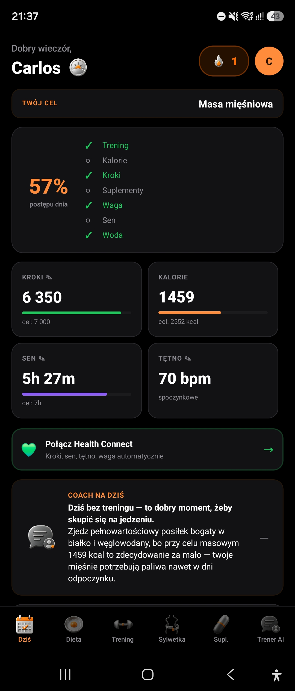
Dziennik żywieniowy działa trzema sposobami — ręcznie, zdjęciem albo skanerem — i możesz je swobodnie łączyć w ciągu dnia. Zjadłeś kanapkę z szynką i serem? Zrób jej zdjęcie, a appka sama rozpozna składniki i wyliczy w przybliżeniu kalorie, białko, węglowodany i tłuszcz — Ty tylko poprawiasz gramaturę, jeśli trzeba. Kupiłeś jogurt w sklepie? Zeskanuj kod kreskowy z opakowania, a wartości uzupełnią się same z bazy produktów.
Cele kalorii i makroskładników nie są sztywnym narzuconym numerem — appka wylicza je na podstawie Twojej wagi, wzrostu, wieku, poziomu aktywności i celu (redukcja / utrzymanie / budowa masy) z onboardingu, a w każdej chwili możesz je ręcznie nadpisać w Ustawieniach. Kalorie z dnia rozbijają się na białko, węglowodany i tłuszcz, więc widzisz nie tylko "ile zjadłem", ale też czy dowozisz białko potrzebne do budowy mięśni.
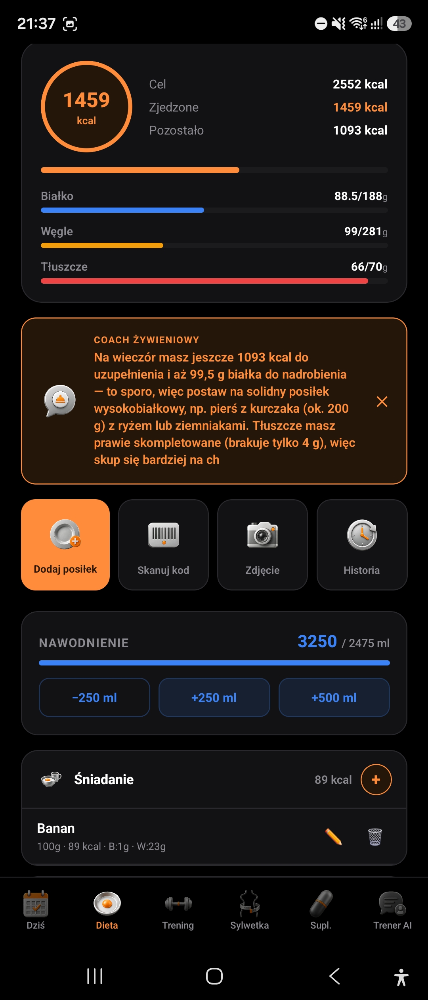
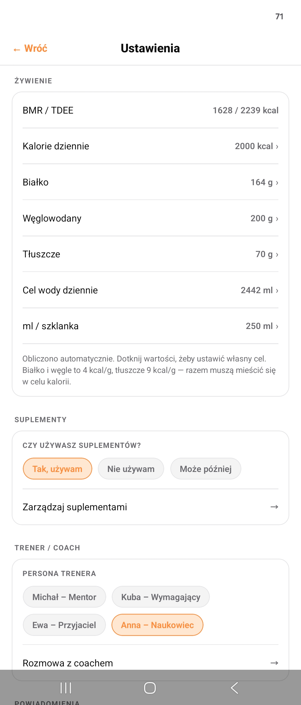
Masz trzy drogi do planu treningowego, w zależności od tego, co już masz. Nie masz nic — appka sama ułoży Ci plan na 13 tygodni dopasowany do celu (masa, redukcja, siła, cardio), poziomu doświadczenia i dostępnego sprzętu. Masz gotowy plan od trenera na kartce, w PDF-ie albo na zdjęciu z siłowni — appka go "przeczyta" i przepisze na cyfrowy kalendarz z seriami i powtórzeniami. Wolisz wybrać sam — przeglądaj gotowe plany Go4Body pod różne cele i wybierz ten, który pasuje.
Podczas samego treningu masz aktywny ekran ćwiczenia — nie musisz nic zapamiętywać ani liczyć w głowie: appka pokazuje instrukcję wykonania, liczy wykonane serie, odmierza minutnik przerwy między seriami i między ćwiczeniami, a każdy ukończony trening trafia do historii razem z szacowanymi spalonymi kaloriami (albo prawdziwymi, jeśli masz podłączony zegarek).
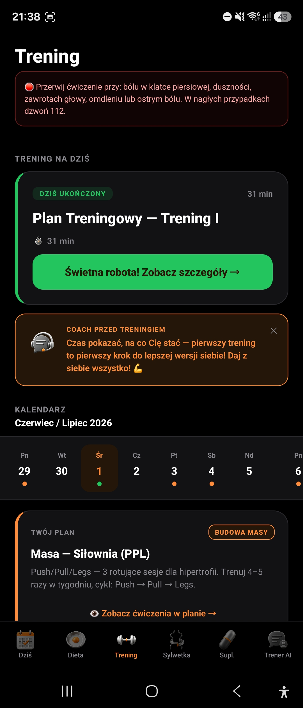
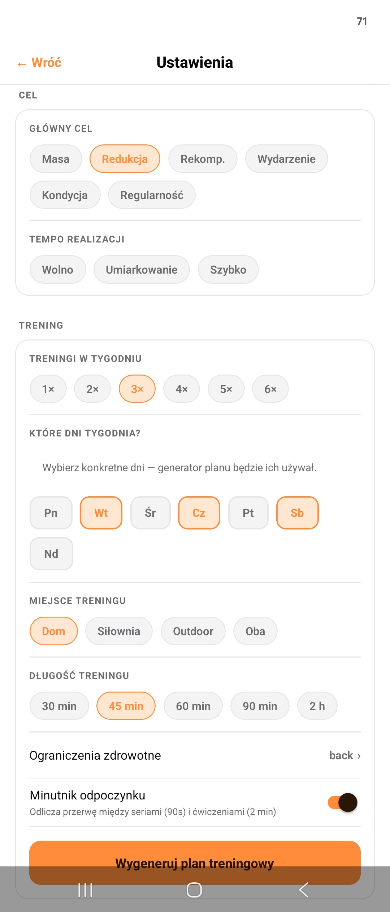
Po połączeniu zegarka przestajesz cokolwiek wpisywać ręcznie — Go4Body samo zaciąga kroki, sen, tętno (w tym spoczynkowe), wagę i skład ciała, a jeśli poszedłeś pobiegać, pojeździć na rowerze albo popływać, taka aktywność ląduje jako osobny wpis w historii treningów — z prawdziwym dystansem i spalonymi kaloriami, nie z szacunkiem. Działa to przez Health Connect — wspólny "hub" danych zdrowotnych na Androidzie, do którego mogą pisać różne aplikacje zegarków (Garmin Connect, Zdrowie Huawei i inne) i skąd Go4Body je odczytuje.
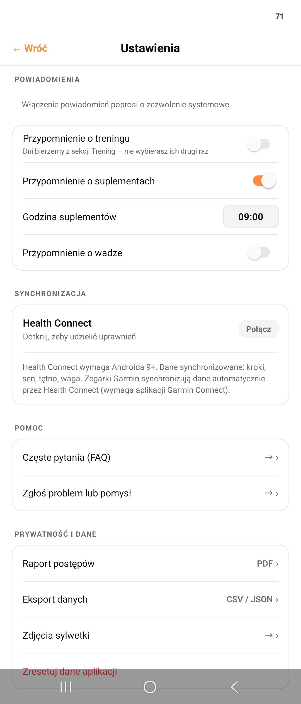
Waga na wadze to tylko jedna liczba — i często myląca (wahania wody, godzina ważenia, cykl). Dlatego Sylwetka pokazuje pełniejszy obraz: wagę na wykresie w czasie (nie pojedynczy odczyt), pomiary obwodów (np. talia, biceps — świetne przy budowie masy, kiedy waga rośnie, ale to może być mięsień, nie tłuszcz) i zdjęcia postępu na osi czasu, żeby zestawić "przed" i "po" obok siebie — to zwykle przekonuje bardziej niż sama liczba na wadze. Jeśli masz wagę ze zgodnym Health Connect (np. z analizą składu ciała), appka doda też % tkanki tłuszczowej i masę mięśniową automatycznie.
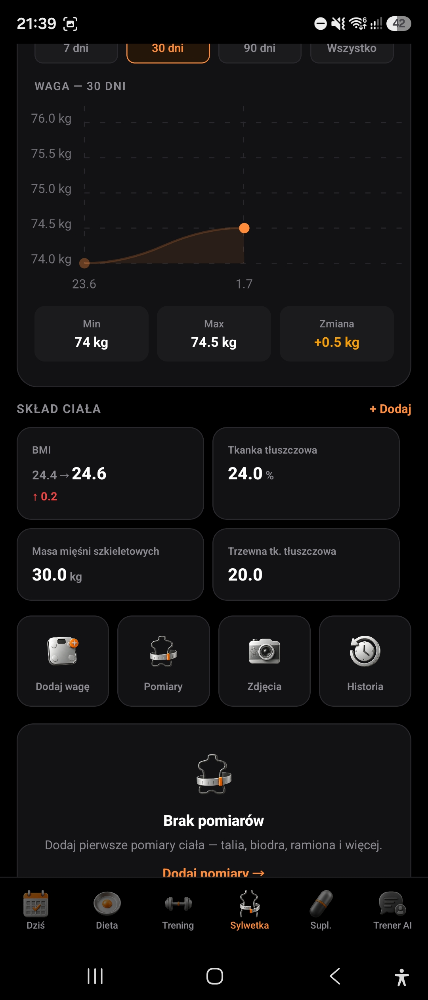
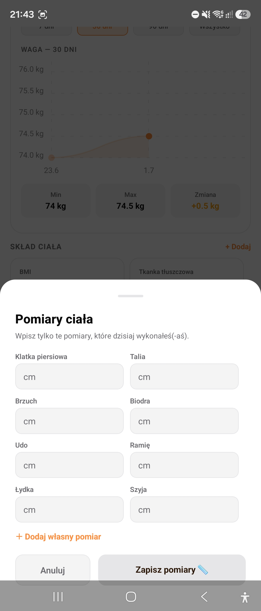
Zakładka Supl. to prosty dziennik przyjmowania — dodajesz suplement raz (np. kreatynę, odżywkę białkową, witaminę D), ustawiasz dawkę i porę, a potem codziennie tylko odhaczasz, co wziąłeś. Jeśli suplement ma kalorie i makro (typowo odżywki białkowe czy gainery), po odhaczeniu automatycznie doliczy się do dziennego bilansu diety — nie musisz go osobno dodawać w Diecie, appka pilnuje, żeby się nie zdublował.
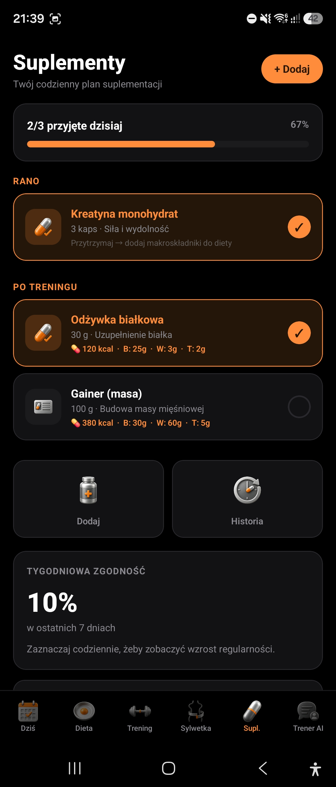
To dokument, który zbiera wszystko, co appka o Tobie wie, i układa w czytelny raport z wykresami — gotowy do wysłania trenerowi personalnemu, dietetykowi albo po prostu dla siebie, żeby zobaczyć czarno na białym, czy idziesz w dobrą stronę. Sam wybierasz, co ma się w nim znaleźć: wagę, pomiary ciała, bilans diety, kroki i nawodnienie, historię treningów (razem z aktywnościami z zegarka — bieganiem, rowerem, basenem) oraz krótkie podsumowanie od AI coacha, które w kilku zdaniach ocenia Twój postęp i sugeruje, na czym się skupić dalej.
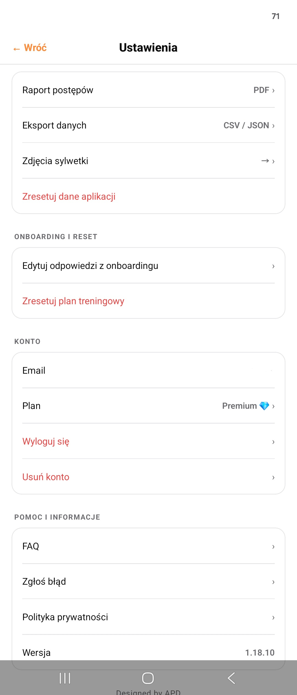
To nie chatbot udzielający ogólnych porad z internetu — Trener AI widzi Twoje realne dane: co dziś zjadłeś, ile Ci brakuje do celu kalorii, czy trenowałeś, jak spałeś, jaki masz plan na jutro. Dzięki temu odpowiedzi są konkretne ("dziś zjadłeś za mało białka, dorzuć jeszcze ok. 30 g") zamiast ogólnikowych. Możesz wybrać personę coacha dopasowaną do stylu, jaki Ci pasuje — od wymagającego "zero wymówek" po bardziej wspierający ton — a rozmowa zawsze uwzględnia porę dnia (rano nie usłyszysz, że "dzień już przegrany", bo appka wie, że dopiero się zaczął).
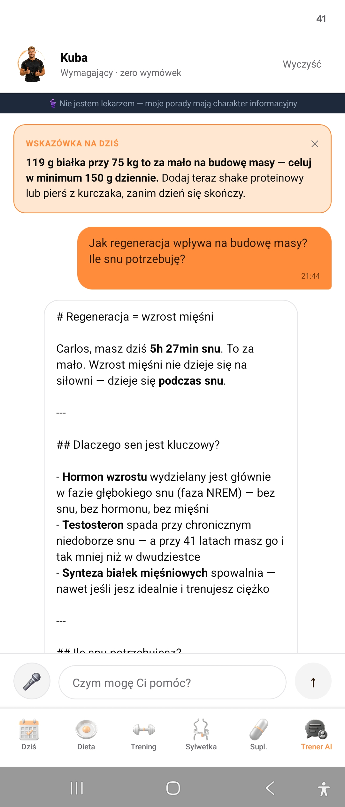
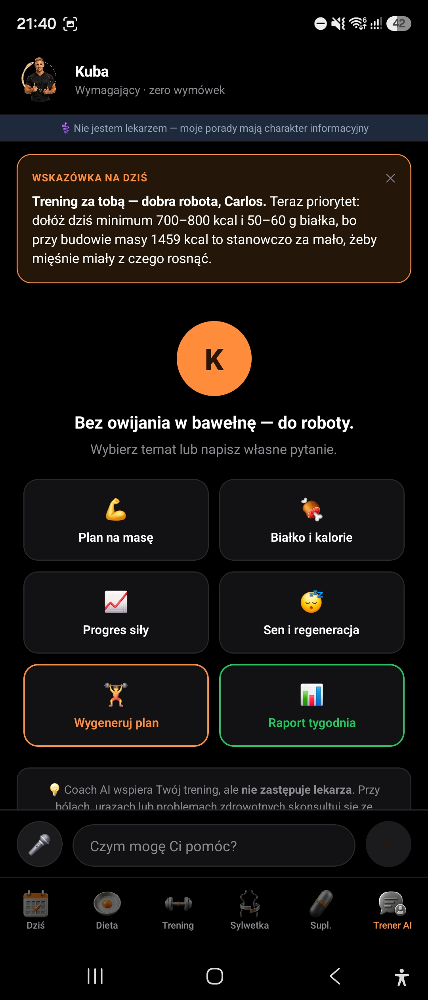
Masz pełną kontrolę nad swoimi danymi. Chcesz zacząć od zera, ale zachować konto i odpowiedzi z onboardingu (wiek, cel, poziom doświadczenia)? Użyj resetu danych. Chcesz zniknąć całkowicie? Usuń konto — to kasuje wszystko bezpowrotnie, łącznie z kontem logowania.
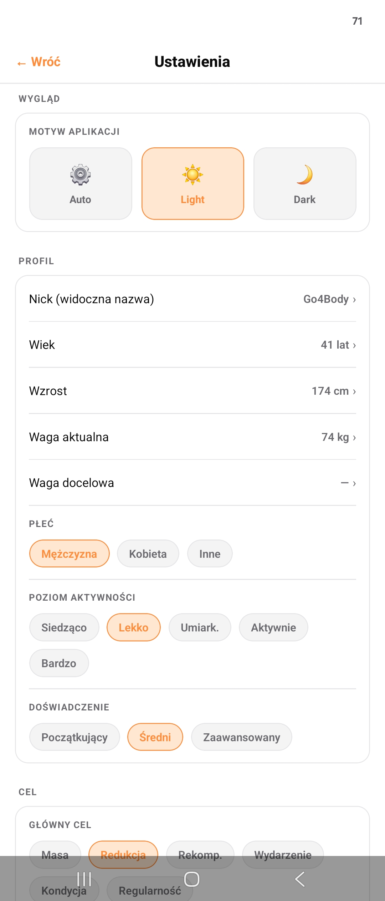
Podstawowa różnica: Basic to Ty wpisujesz treningi i posiłki ręcznie — jest darmowy na zawsze, bez limitu czasu — a kroki, sen, tętno i wagę z zegarka możesz zaciągać automatycznie przez Health Connect. Premium to appka robi więcej za Ciebie — rozpoznawanie posiłków ze zdjęcia, skaner kodów kreskowych, pełna rozmowa z Trenerem AI zamiast tylko dziennych wskazówek, import planu od trenera i pełna biblioteka ćwiczeń zamiast podstawowej.
Napisz do nas przez Ustawienia → Pomoc → Zgłoś błąd/pomysł/pytanie w appce, albo bezpośrednio mailem.